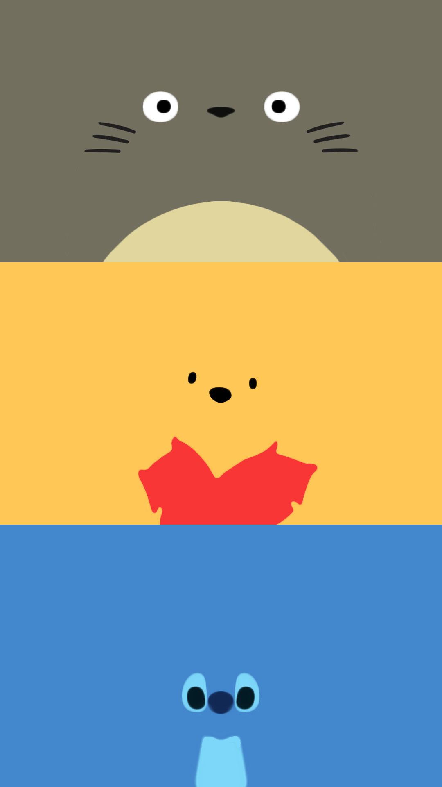
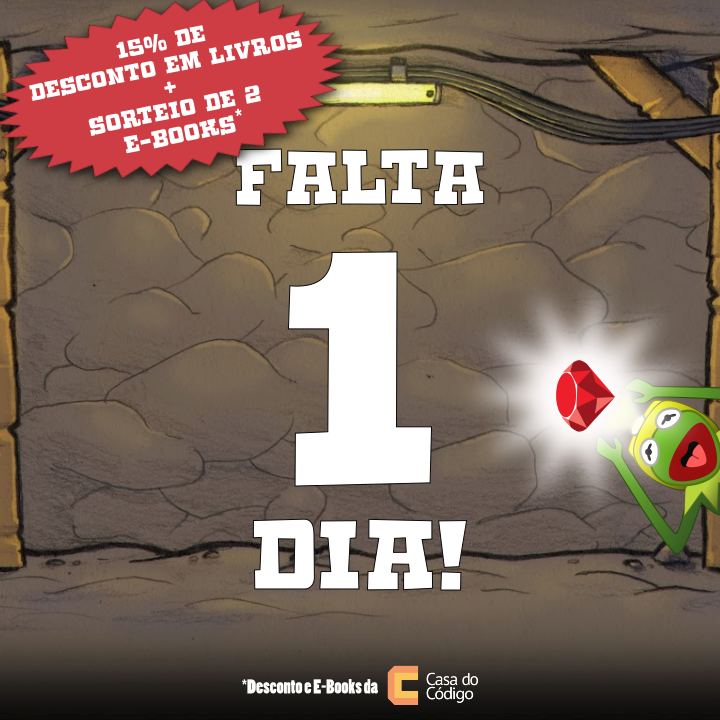
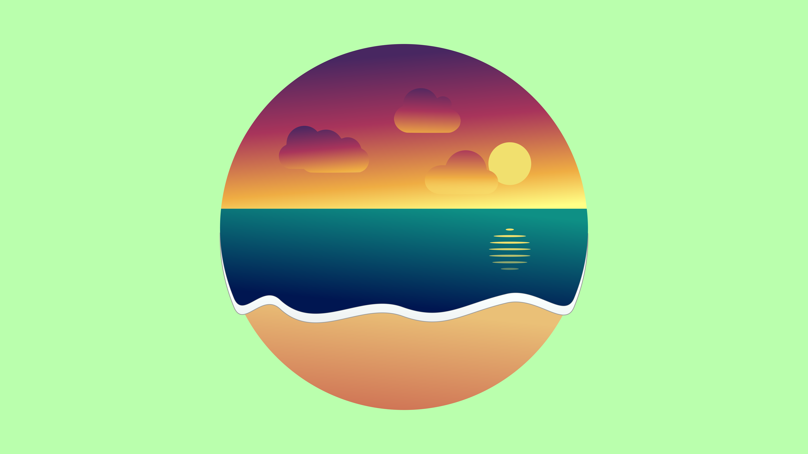

Arts
My history with arts started first with videos. In the college me and my friends always wanted to make videos for any kind of assignments, and we did! Unfortunately, most of these videos were lost through time.
Then I've entered the universisty and joined the Academic Center of
Computing. There we did events to the students of our course and we needed
divulgation material to get their attention. So I started to learn and try
more about programs of digital drawing. I learned about Photoshop and Gimp,
but I realized I was more fond of Vector drawing, so I learned Illustrator
and Inkscape! Below are some of my terrible works.
The First

This is the first art I made. Created for a Gaming Tournament for the students of Computing. It's basically a cut and copy from various arts I found on the internet.
Minimalism
Then I started to try to create more by myself. I really enjoy minimalist arts, so I tried to give it a shot.
Best Feedback

This is the art that I received more compliments about. It was for a CACo Games too (the tournament I mentioned above) and hearing the people talking about it and saying nice thing were heartwarming!
For those who don't recognize it, it is inspired on the art of Final Fantasy VII..
More from CACo
This is one of the arts I made for a Workshop of Ruby on the Academic Center. The background I got online, but the rest it's mine. I really enjoyed my Kermit!
*In Brazil Kermit is called Caco! That's why he's the mascot of our Academic Center (CACo).
Lollibeach
This is my last art, I call it "Lollibeach". It's a little abstract, a little minimalist and maybe a little weird. All of it was done by myself in Inkscape and maybe I'm being a delusional artist here, but I really like it!
More?
This is just a summary of this hobby of mine. I have other arts saved, but I don't want to polute anymore here.
It's being a while since my last one, but I hope I have some time for more in the future.